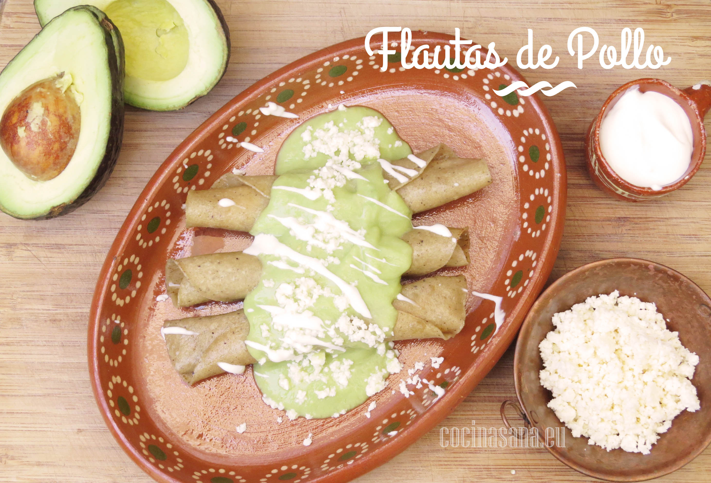

Ingredientes:
- Pechugas de pollo - 2 pzas.
- Tortillas - 10 a 15 pzas.
- Aguacate - 1 pza.
- Queso fresco - 100 gr.
- Limón - 1 pza.
- Sal - cantidad suficiente.
- Agua - 1/4 tza.
- Ajo - 1 diente.
Forma de preparación:
- Cocer el pollo en suficiente agua, añadir sal y el diente de ajo.
- Retirar del agua cuando esté cocido y dejar reposar para desmenuzar las pechugas.
- Retirar el hueso del aguacate y colocar la pulpa en la licuadora, junto con ¼ tza. agua, sal y el jugo de limón.
- Calentar ligeramente las tortillas hasta que estén flexibles y colocar un poco del pollo desmenuzado.
- Enrollar y cocinar en el aceite caliente hasta que tomen un color dorado.
- Retirar el exceso de aceite de las flautas y servir con la salsa de aguacate y espolvorear el queso.
¡Y listo para disfrutar!